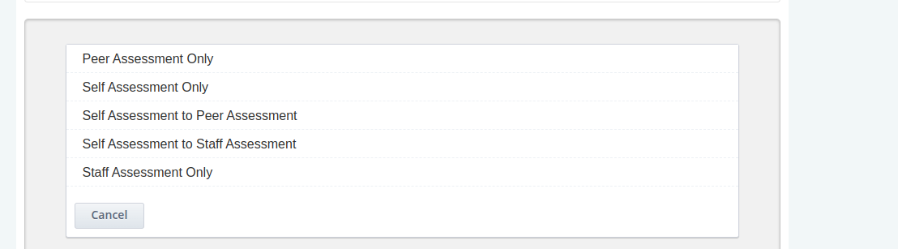
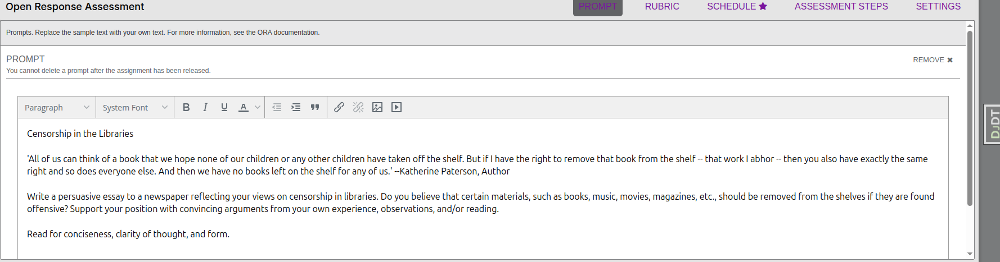
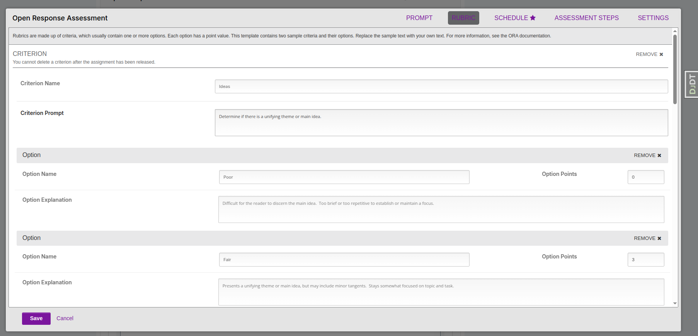
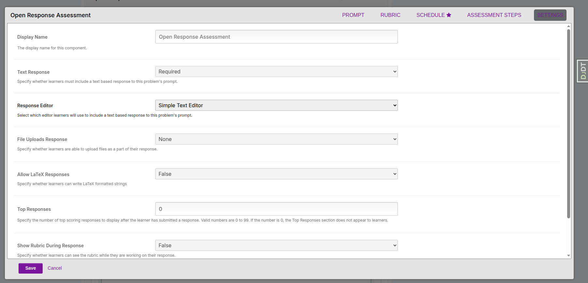
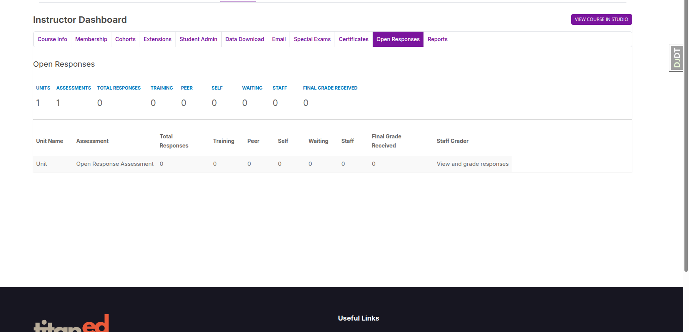
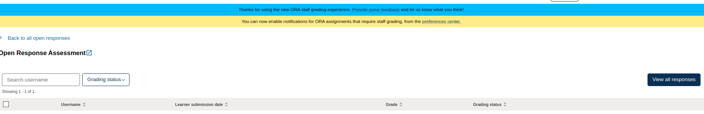
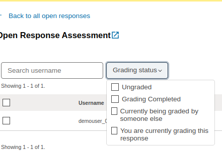
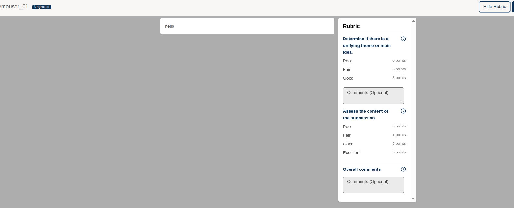
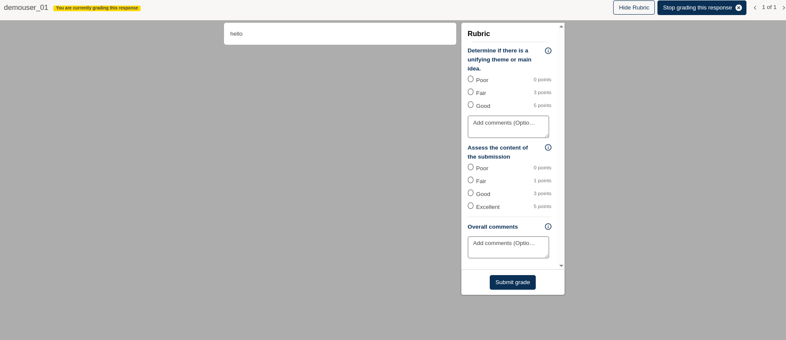

Open Response Assessment (ORA) Overview and Setup Guide
The Open Response Assessment (ORA) allows learners to answer open-ended questions in essay form or upload files as part of their response. Responses are then graded by learners themselves, their peers, course instructors, or a combination of the three.
There are many ways to configure an ORA. This article provides a quick overview of the problem type so you can get up and running.
Creating an Open Response Assessment
- From Studio, navigate to the course unit where you want to add the ORA.
- At the bottom of the unit, click Add New Component > Problem > Open Response Assessment.
Note: You will see both the terms Peer Assessment and Open Response Assessment used interchangeably. At Appsembler, we use Open Response Assessment to avoid confusion.
- You will see a demo version of the ORA. Click the Edit button to begin making changes.


Configuring the Rubric
The rubric defines how learners' responses are graded.
- A rubric consists of Criteria — characteristics a learner's response should include.
- Each Criterion has a set of Options, describing how well the response meets that criterion (e.g., Poor, Fair, Good).
- Each option has a point value assigned.
Setting up Criteria and Options
- Each criterion requires a name and a description.
- Under each criterion, add options with:
- Option name
- Explanation
- Assigned points
- You can add more options as needed.
- Choose whether written feedback is optional or required for each criterion.
Once your rubric is complete, click Settings to finish setting up the ORA.

Configuring the Settings of an ORA

In the Settings panel, you can configure:
- The name of the ORA and the availability dates for submissions.
- Whether learners are allowed to upload files or include LaTeX in their responses.
(See documentation on allowing file uploads for details.)
Learner Steps Configuration
Choose which optional steps learners will take by checking/unchecking:
-
Learner Training
Learners see a sample response and how it should be graded. -
Peer Assessment
Learners assess one another's responses using the rubric. -
Self Assessment
Learners assess their own responses using the rubric. -
Staff Assessment
Course staff assess learner responses using the rubric.
For example, you might enable only Staff Assessment if staff grading is preferred.
Responding to an ORA (Learner View)
Once an ORA is live, learners will see the prompt and submission interface.
- After writing their response, learners click Submit to proceed.
- If assessment steps like peer or self-assessment are enabled, learners will follow the prompts.
- When waiting for feedback, the system will show a waiting status.
Grading an ORA (Staff View)
Staff can navigate to the ORA component to review and grade learner responses:
- Staff read submitted responses.
- Staff provide feedback per the rubric.
- Staff can choose to:
- Submit the assessment and finish grading this response.
- Submit and continue grading other responses.
This guide is for LMS administrators and course authors who need to create and manage ORA assignments.

Choose the workflow that fits your course objectives.
ORA Grading Workflow in LMS (Instructor View)

Once learners have submitted their responses, instructors can grade them directly from the LMS interface.
Accessing Submitted Responses
- Navigate to the Open Response tab inside the course LMS view (as an instructor).
- A table will display a summary of each ORA assignment with the following columns:
- Click View and grade responses in the corresponding row under the Staff Grader column.
Understanding Grading Status
Each response has a grading status that indicates its current state:
- Ungraded: The submission has not yet been graded.
- Grading Completed: The grading is finalized and a score is assigned.
- Currently being graded by someone else: Another staff member is grading the response.
- You are currently grading this response: You have opened and started grading this response.

Viewing All Responses
To browse and grade all learner submissions, click the View all responses button. This allows staff to see a full list and choose which submissions to review and grade.
Grading a Submission Using the Rubric
- Select a learner response.
- In the top-right corner, click Show Rubric to expand the rubric interface.
- The rubric will display all the criteria defined for that ORA.

Example Rubric Criteria
Criterion 1
Determine if there is a unifying theme or main idea.
- Poor — 0 points
- Fair — 3 points
- Good — 5 points
- Add comments (Optional)
Criterion 2
Assess the content of the submission.
- Poor — 0 points
- Fair — 1 point
- Good — 3 points
- Excellent — 5 points
- Add comments (Optional)
Overall Comments
You can provide overall feedback at the bottom of the rubric.

Finalizing the Grade
After selecting scores for each criterion and adding optional comments:
- Click the Submit Grade button to finalize the assessment.
- You may then proceed to the next submission for grading.